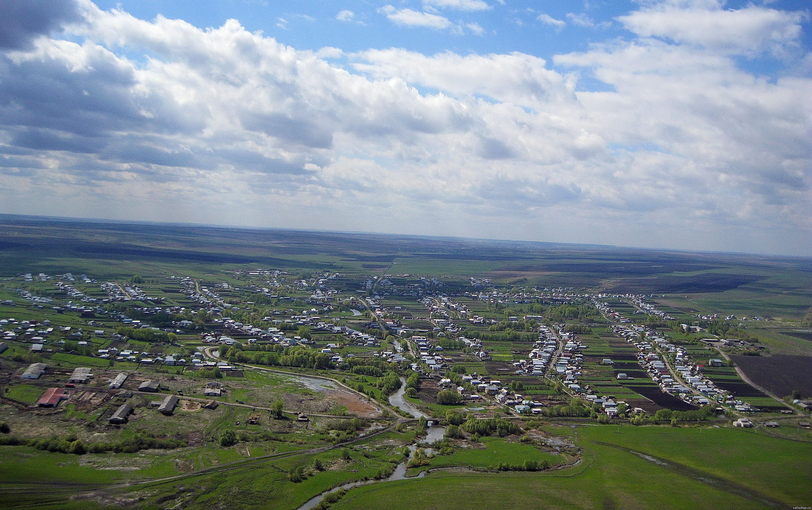

Добро пожаловать
на официальный сайт
администрации Кочковатского сельсовета Харабалинского района Астраханской области

Основной целью сайта служит необходимость обеспечения гласности
и доступонсти информации о деятельности органов местного самоуправления и
принимаемых ими решениях, что является необходимым условием и залогом успешного
социально-экономического процесса
Администрация муниципального образования "Кочковатский сельсовет" Харабалинского района Астраханской области
Адрес: Астраханская область, Харабалинский район, с. Кочковатка, ул. Юбилейная, 11/2
Телефон (факс): 8(85148)5-98-84
E-mail: kochkovatka@yandex.ru
График работы: ежедневно с 8-00 до 17-00, перерыв с 12-00 до 13-00, выходные - суббота, воскресенье